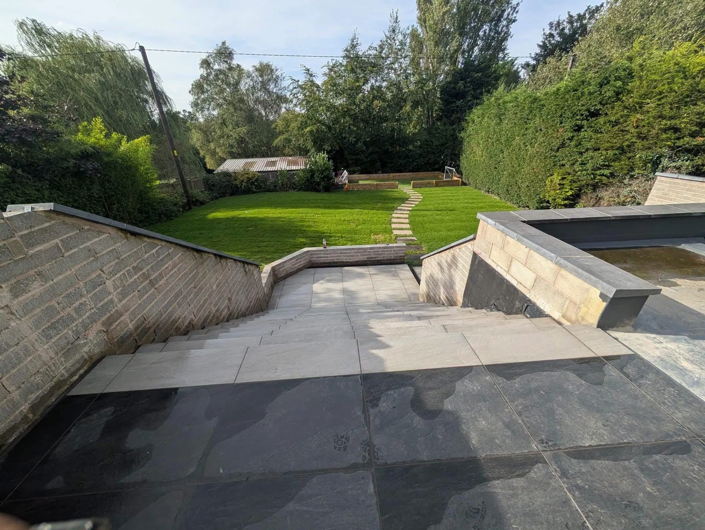
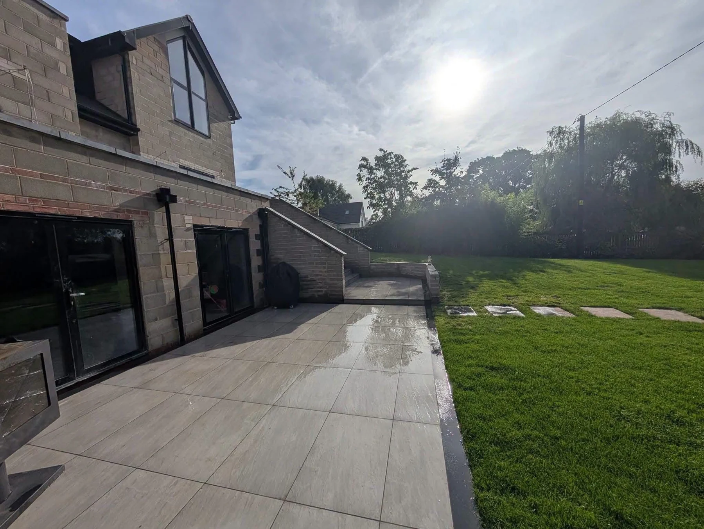

RIGHTGRASS · BESPOKE OUTDOOR LIVING
A new outlook.
Right outside.
Paving, green spaces and the details that connect them. Discover outdoor projects designed around the way a garden is used.
BESPOKE OUTDOOR LIVING
Every detail.
A bigger picture.
A paved area beside the house, a path across the lawn, a step between levels. Thoughtful connections can change how an outside space feels.
The Rightgrass portfolio brings together patios, artificial turf, lawn areas and garden steps. Explore the materials, layouts and finishing details in our own project photographs.
Take a closer look →

BEFORE & AFTER
From the ground
to a new view.
The same flight of garden steps during preparation and after paving, leading to a lawn and a curved line of stepping stones. Tap a photograph to see every detail.
Steps & garden levels →PAVING & GARDEN DETAILS
Made for life outdoors.
Open any photograph to explore the full view.
GREEN SPACES · CLEAN LINES
Small details. More possibilities.
Pale paving, dark borders and artificial turf give these garden spaces a clear layout.
BEHIND THE TRANSFORMATION
Watch us work.
Take a closer look at Rightgrass projects, from the starting point to the finishing touches.
Let’s talk about your garden →The finishing touches.
A garden transformed.

RIGHTGRASS
Bespoke
outdoor living.
From a full garden transformation to a new paved area, start with how you would like to use your outside space.
Photographs and measurements help explain the existing layout.
Think about surfaces, levels, access and the areas you want to keep.
Choose examples of the finishes and layouts you would like to discuss.
YOUR NEXT OUTDOOR PROJECT
Start with
your ideas.
Based in Blackburn, we create bespoke outdoor spaces around the way you want to live. Tell us about your garden, your plans and the finish you have in mind.
EXPLORE THE WORK
A few useful details.
What does the portfolio show?
Patios, paved paths, garden steps, lawn areas and artificial turf. Each photograph is supplied by Rightgrass for this website.
Can I see the photographs larger?
Yes. Tap any gallery image to open the complete photograph. Close it with the visible close button or the Escape key.
Are the steps photographs a before-and-after pair?
Yes. The photographs show the same garden steps during preparation and after the paving and lawn work.
What should I prepare for a project discussion?
Photographs, approximate measurements, your postcode and ideas for materials or layout. Include any information about levels and access.
RIGHTGRASS · BLACKBURN
Let’s bring your garden to life.
Tell us what you have in mind for your outdoor space.
rightgrass@hotmail.co.uk